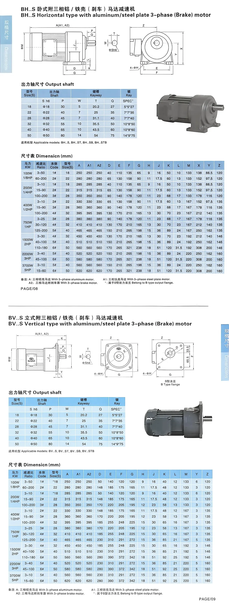

COMPACT AC GEARED MOTOR
Small AC Gear Reduction Motor
SMK small AC geared motors combine a compact induction motor with a parallel-shaft reduction gearbox. Single-phase and three-phase configurations can be selected for machinery that requires dependable low-speed output in a space-saving package.
- Single-phase and three-phase AC motor options
- 100 W to 3700 W selections in the supplied data
- Nominal ratios from 3:1 to 200:1
- BH.S horizontal and BV.S vertical mounting
- Optional brake motor configurations
Typical Applications
Suitable uses include conveyors, packaging machinery, food equipment, small mixers, printing machinery, automation systems, agricultural equipment and other compact industrial drives.
Single-Phase or Three-Phase Selection
Single-phase motors are useful where only a single-phase supply is available. Three-phase motors are commonly selected for continuous industrial operation. Confirm voltage, frequency, power, starting requirements and brake needs before ordering.
Power, Ratio and Gearbox Size Selection
Selection ranges transcribed from the supplied BH.S and BV.S dimension sheets.
| Motor power | Horsepower | Ratio range | Body code | Gearbox size |
|---|---|---|---|---|
| 100 W | 1/8 HP | 3–50 | 1# | 18 |
| 100 W | 1/8 HP | 60–200 | 2# | 22 |
| 200 W | 1/4 HP | 3–10 | 1# | 18 |
| 200 W | 1/4 HP | 15–90 | 2# | 22 |
| 200 W | 1/4 HP | 100–200 | 3# | 28 |
| 400 W | 1/2 HP | 3–10 | 2# | 22 |
| 400 W | 1/2 HP | 15–90 | 3# | 28 |
| 400 W | 1/2 HP | 100–200 | 4# | 32 |
| 750 W | 1 HP | 3–25 | 3# | 28 |
| 750 W | 1 HP | 30–120 | 4# | 32 |
| 750 W | 1 HP | 125–200 | 5# | 40 |
| 1500 W | 2 HP | 3–30 | 4# | 32 |
| 1500 W | 2 HP | 40–100 | 5# | 40 |
| 1500 W | 2 HP | 110–180 | 6# | 50 |
| 2200 W | 3 HP | 3–40 | 5# | 40 |
| 2200 W | 3 HP | 45–100 | 6# | 50 |
| 3700 W | 5 HP | 3–10 | 5# | 40 |
| 3700 W | 5 HP | 15–60 | 6# | 50 |
Output Shaft Dimensions
Common shaft and key dimensions in millimetres.
| Gearbox size | Shaft S (h6) | P | Keyway W | T | Q | Key specification |
|---|---|---|---|---|---|---|
| 18 | Ø18 | 30 | 5 | 20.2 | 27 | 5×5×27 |
| 22 | Ø22 | 40 | 7 | 25 | 35 | 7×7×35 |
| 28 | Ø28 | 45 | 7 | 31.1 | 40 | 7×7×40 |
| 32 | Ø32 | 55 | 10 | 35.5 | 50 | 10×8×50 |
| 40 | Ø40 | 65 | 10 | 43.5 | 60 | 10×8×60 |
| 50 | Ø50 | 80 | 14 | 54 | 75 | 14×9×75 |
BH.S Horizontal and BV.S Vertical Dimensions
Supplied drawings cover aluminum or steel-plate three-phase motor versions and related brake models.

BH.S horizontal applicable families shown include BH.S, BH.ST, BH.SB and BH.STB. BV.S vertical families shown include BV.S, BV.ST, BV.SB and BV.STB. A, A1 and A2 depend on motor construction; confirm the final drawing before ordering.
Frequently Asked Questions
Can I order a single-phase version?
Yes. Provide the required voltage, frequency, power and starting requirements so SMK can check the appropriate single-phase configuration.
Are three-phase brake motors available?
The supplied dimensional data includes related brake-model families. Confirm brake voltage, duty and release requirements during selection.
What mounting styles are available?
The supplied data covers BH.S horizontal and BV.S vertical arrangements with multiple gearbox sizes.